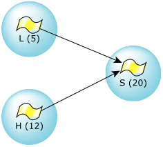
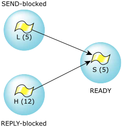
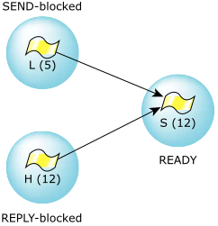

One of the interesting issues in a realtime operating system is a phenomenon known as priority inversion. This can be fixed by a mechanism known as priority inheritance.
Priority inversion manifests itself as, for example, a low-priority thread consuming all available CPU time, even though a higher-priority thread is ready to run.
Now you're probably thinking, Wait a minute! You said that a higher-priority thread will
always preempt a lower-priority thread! How can this be?
This is true; a higher-priority thread will always preempt
a lower-priority thread.
But something interesting can happen.
Let's look at a scenario where
we have three threads (in three different processes, just to keep things simple), L
is our low-priority thread,
H
is our high-priority thread, and S
is a server.
This diagram shows the three threads and their priorities:

Currently, H is running. S, a higher-priority server thread, doesn't have anything to do right now so it's waiting for a message and is blocked in MsgReceive(). L would like to run but is at a lower priority than H, which is running. Everything is as you'd expect, right?
Now H has decided that it would like to go to sleep for 100 milliseconds—perhaps it needs to wait for some slow hardware. At this point, L is running.
This is where things get interesting.
As part of its normal operation, L sends a message to the
server thread S, causing S to go READY
and (because it's the highest-priority thread that's READY)
to start running.
Unfortunately, the message that L sent to S was
Compute pi to 5000 decimal places.
Obviously, this takes more than 100 milliseconds. Therefore, when H's 100 milliseconds are up and H goes READY, guess what? It won't run, because S is READY and at a higher priority!
What happened is that a low-priority thread prevented a higher-priority thread from running by leveraging the CPU via an even higher-priority thread. This is priority inversion.
To fix it, we need to talk about priority inheritance. A simple fix is to have the server, S, inherit the priority of the client thread:

In this scenario, when H's 100-millisecond sleep has completed, it goes READY and, because it's the highest-priority READY thread, runs.
Not bad, but there's one more gotcha.
Suppose that H now decides that it too would like a computation performed. It wants to compute the 5,034th prime number, so it sends a message to S and blocks.
However, S is still computing pi, at a priority of 5! In our example system, there are lots of other threads running at priorities higher than 5 that are making use of the CPU, effectively ensuring that S isn't getting much time to calculate pi.
This is another form of priority inversion. In this case, a lower-priority thread has prevented a higher-priority thread from getting access to a resource. Contrast this with the first form of priority inversion, where the lower-priority thread was effectively consuming CPU—in this case it's only preventing a higher-priority thread from getting CPU—it's not consuming any CPU itself.
Luckily, the solution is fairly simple here too. Boost the server's priority to be the highest of all blocked clients:

This way we take a minor hit by letting L's job run at a priority higher than L, but we do ensure that H gets a fair crack at the CPU.